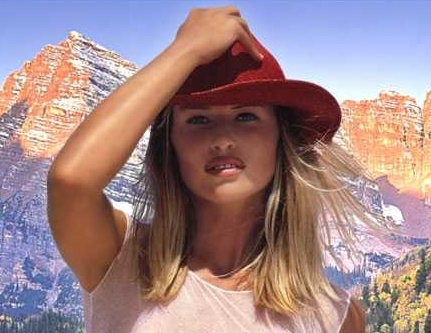
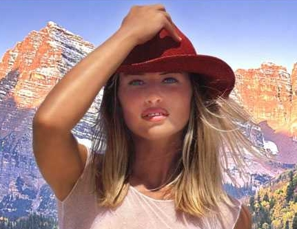
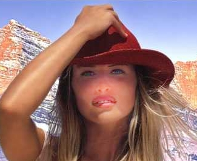

Инструмент Effect (Эффект) (Урок 2)
Инструмент Smudge (Размазывание)
Это второй тип инструмента Effect (Эффект), который выбирается из раскрывающегося списка Brush category (Категория кисти) на Панели свойств. Название самого инструмента и его значок в виде размазывающего пальца, говорят сами за себя. По определению, этот инструмент позволяет уменьшать расхождение между цветами или жесткими краями в изображении. Фактически, результат работы этого инструмента соответствует его названию.
Давайте посмотрим, что даст простой мазок кистью Smudge (Размазывание). В раскрывающемся списке Brush type (Тип кисти) выберите первый тип – Smudge A Little (Легкое размазывание). Обратите внимание, в отличие от инструмента Smear (Мастихин), на Панели свойств становится активным счетчик Amount (Стекание). Этот параметр может принимать значения от 1 до 100 и регулирует, в какой степени эффект воздействует на изображение. На рис. 1 показано исходное изображение слева и мазок кистью Smudge A Little (Легкое размазывание) справа. Значение параметров оставлено по умолчанию.
Результат виден налицо. Произошло обычное размазывание изображения. Волокна древесины, попавшие в «зону действия» кисти попросту исчезли, превратившись в пятно «усредненного» цвета. Естественно, такое радикальное вмешательство в изображение, обычно нежелательно. Что можно сделать, чтобы как-то подстраховаться от таких результатов? На первый случай можно просто выделить нужный фрагмент, чтобы предохранить остальную часть изображения. На рис. 2 показан такой подход. Мазок сделан той же кистью.
На рисунке слева исходное изображение с маской. Стрелкой показано волокно древесины, по которому был сделан мазок. Также показано начальное положение кисти перед выполнением мазка. Справа – полученный результат. Как видно, результат выглядит гораздо лучше, чем на рис. 1, мы просто «удалили» (замазали) волокно древесины.
В каких ситуациях можно еще применить инструмент Smudge (Размазывание)? Для обычных целей при работе с изображениями он мало подходящий. Ну разве что для имитации одного из стилей искусства, когда краску размазывают пальцем или в ряде других, не так часто встречающихся, случаев. Давайте еще рассмотрим пример использования этого инструмента. На рис. 3 показан результат использования кисти Dry Cover (Раскатка всухую).
Слева – исходное изображение, справа – результат «замазывания» дефекта на кирпиче. Если не знать, что он там был, то догадаться о наличии выбоины на кирпиче, после обработки кистью уже невозможно.
Когда еще, например, можно удачно применить возможности инструмента Smudge (Размазывание)? Например, у вас есть фотография школьной доски исписанной мелом. Если по вашему замыслу нужно изобразить часть доски вытертой измазанной («запыленной») мелом тряпкой, как будто надписи частично стерты. Вот тут в самый раз вам пригодится этот инструмент. У меня, к сожалению, не нашлось под рукой такой фотографии, но смысл того, что я хотел сказать, понятен.
Инструмент Brightness (Яркость)
Инструмент Brightness (Яркость) позволяет избирательно делать ярче или затемнять участки изображения при помощи кисти. Назначение этого инструмента также весьма очевидно. В отличие от фильтров, выполняющих те же функции, кистью часто делать это гораздо удобней, не прибегая к маскированию частей изображения. Рассмотрим пример. На рис. 4 показано исходное изображение.

Ничего необычного мы здесь как будто не видим. Предположим, вам по каким-то своим соображениям, не очень нравится тень от шляпы на лице девушки. Осветлить лицо с помощью фильтра, не исказив общее впечатление от фото можно, но придется выполнить некоторые дополнительные телодвижения. Удобней это сделать используя кисть Brightness (Яркость). В списке Brush type (Тип кисти), выберем тип Large Soft Brightness (Большая Мягкая Яркость). Размер кисти увеличим до 70 px и слегка обработаем лицо девушки. Результат показан на рис. 5.

Если вас не очень устраивает такой результат, вы можете дополнительно подправить «теневую» часть лица, уменьшив размер кисти или выбрать другой тип кисти. Но даже при минимальной обработке кистью, видно, что избирательная обработка с помощью инструмента гораздо удобней, чем выполнение подобных действий другими способами. На рис. 6, показан результат обработки той же фотографии при увеличении значения Amount (Стекание) до 40 (по умолчанию этот параметр равен 10).

Сразу видно «усиление осветления» при увеличении значения параметра Amount (Стекание).
Аналогичным образом работает тип кисти, Darken (Затемнить), только в этом случае, изображение естественно затемняется. Обратите внимание на то, что при выборе этого типа кисти, значение параметра Amount (Стекание) имеет отрицательное значение. По умолчанию Amount (Стекание) = -5. Уменьшение этого значения усиливает эффект затемнения.
Можно найти и более «экзотическое» применение этому инструменту. Рассмотрим еще один пример. На рис. 7 показано исходное изображение.
Попробуем «усилить румянец» на левой щеке. Снова выберем кисть Large Soft Brightness (Большая Мягкая Яркость). Изменим на Панели свойств параметры. Установим следующие значения: Merge mode (Режим наложения) выберем Multiply (Умножение); Amount (Стекание) = 2; Transparency (Прозрачность) = 80; размер кисти = 50 px. Слегка обработаем кистью щеку. Результат показан на рис. 8.